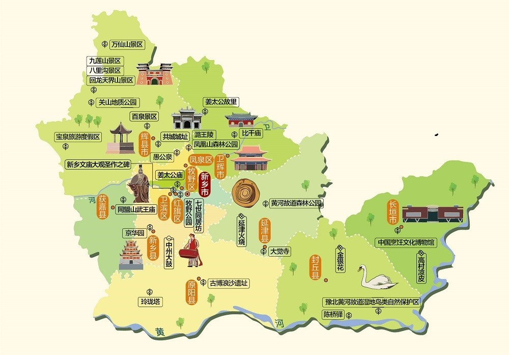

新乡介绍
新乡简介
河南省新乡市八里沟景区涵盖八里沟、万仙山、九莲山、关山、回龙·天界山、秋沟、齐王寨等7个生态文化游览区。 景区内有帐书文化、道教文化、红色文化、山水文化，拥有多处自然人文景观。 号称“太行之魂、中华风骨”，被园林专家誉为“亚洲一绝”。

河南省新乡市八里沟景区涵盖八里沟、万仙山、九莲山、关山、回龙·天界山、秋沟、齐王寨等7个生态文化游览区。 景区内有帐书文化、道教文化、红色文化、山水文化，拥有多处自然人文景观。 号称“太行之魂、中华风骨”，被园林专家誉为“亚洲一绝”。